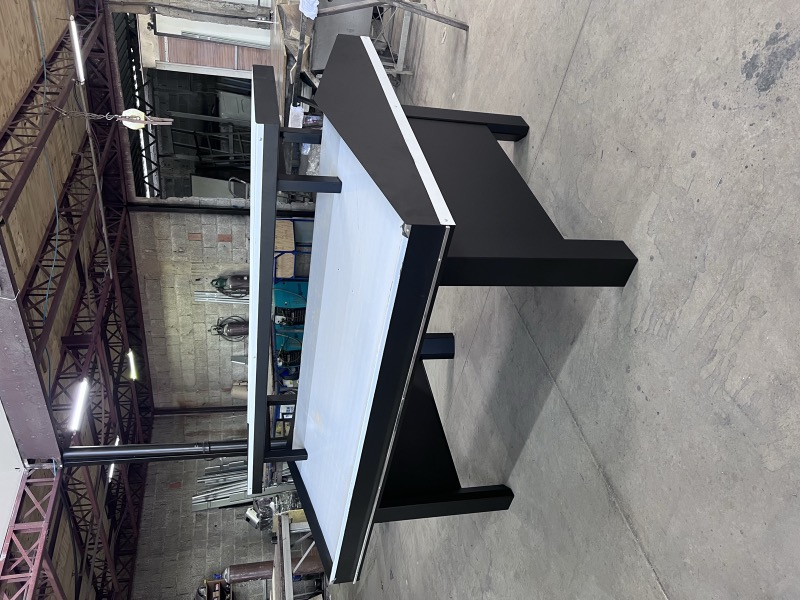
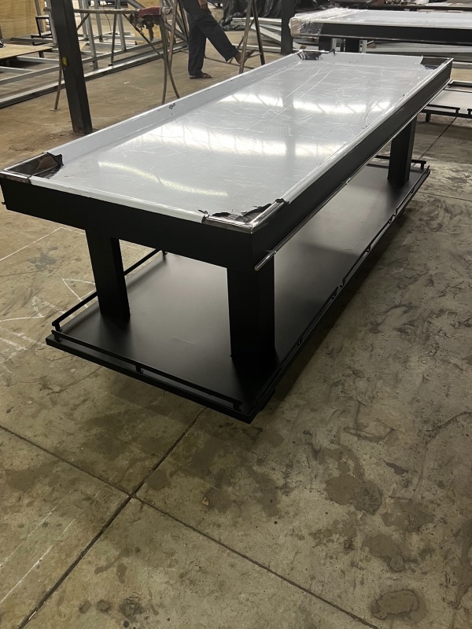
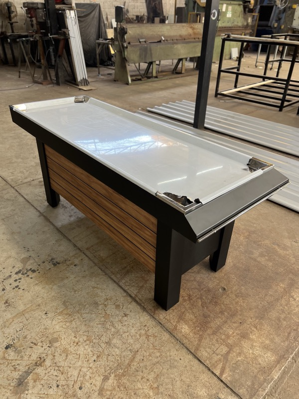
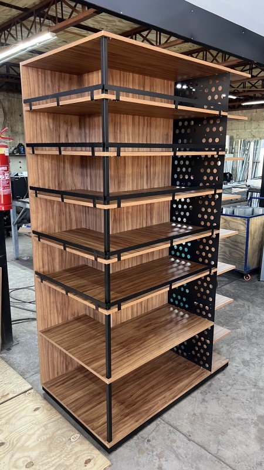
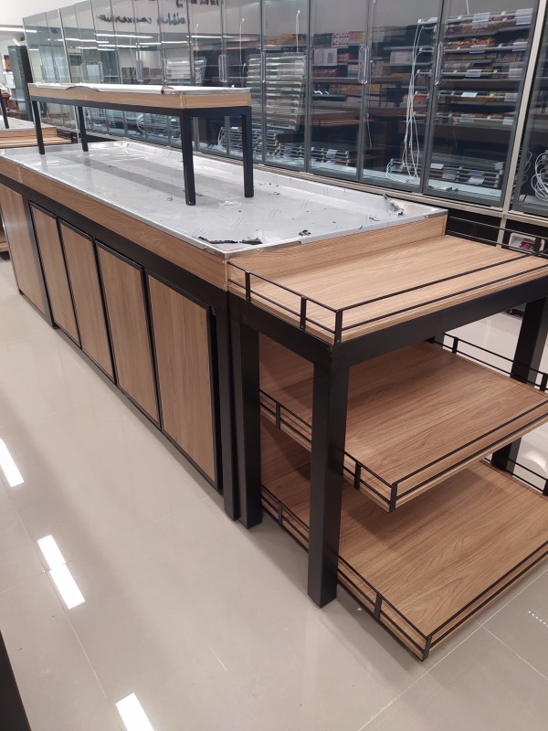
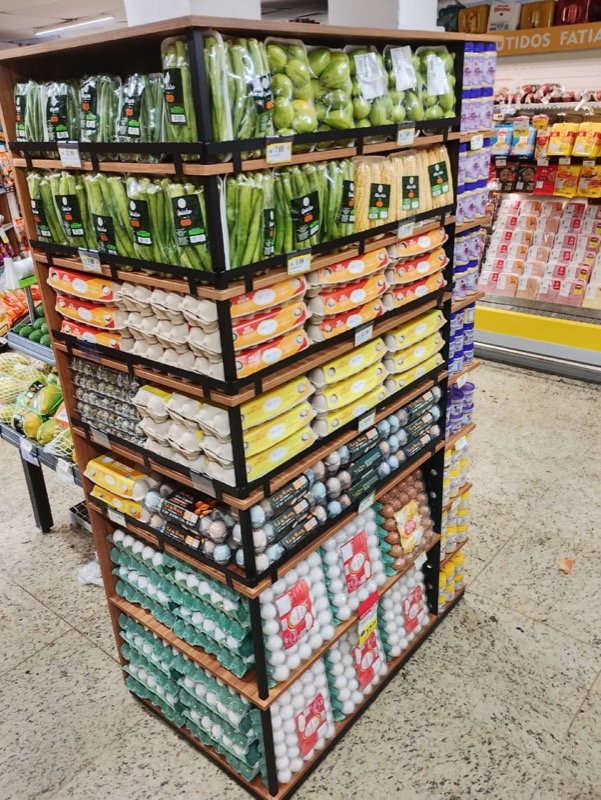
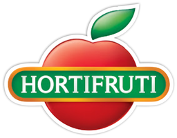
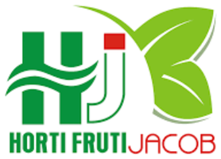
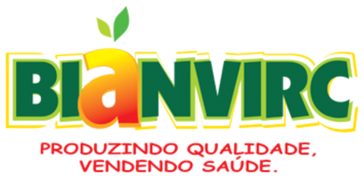

De centroBanca de centro master
Tampo duplo com prateleira superior suspensa. Expõe dois níveis de FLV no corredor central sem roubar circulação.
- Tampo duplo
- Prateleira aérea
- Acesso 360°
Projetamos e fabricamos bancas expositoras para hortifruti em aço tratado — de centro, de parede, bananeiros e gôndolas. Estrutura que aguenta a carga do dia a dia e apresenta o FLV do jeito que o cliente compra com os olhos.
Cada modelo nasce da planta da sua loja: vão livre, altura de exposição e acabamento definidos no projeto. Abaixo, as configurações que mais saem — todas produzidas na nossa fábrica.

De centroTampo duplo com prateleira superior suspensa. Expõe dois níveis de FLV no corredor central sem roubar circulação.

De centroPerfil baixo e prateleira inferior corrida para estoque de giro. Bordas em alumínio que protegem a fruta e o cliente.

De paredeFrente ripada em padrão madeira e tampo inclinado para a fruta se apresentar sozinha. Encosta na parede e libera o corredor.

GôndolaSete níveis reguláveis com lateral perfurada para ganchos e sinalização. Feita para embalados, granel leve e complementos do setor.

De paredeConjunto de ilha e parede em padrão madeira com portas de acesso ao estoque interno. Acabamento para lojas de padrão elevado.

GôndolaDois lados de exposição, prateleiras rasas e travessas de contenção. Aproveita a ponta de gôndola sem perder frente de venda.
Além das bancas, produzimos os suportes que sustentam prateleira em loja, depósito e obra.
De centro, de parede, bananeiros e ilhas para o setor de FLV de supermercados e lojas de hortifruti.
Suportes para prateleira em diversas medidas, dobrados e soldados em chapa de aço, com pintura de acabamento.
Perfis em L para estrutura, montagem de prateleira e reforço, cortados no comprimento que o projeto pedir.
Estruturas moduláveis para complementar o setor, com níveis reguláveis e laterais preparadas para sinalização.
Fotos de lojas com bancas Rios instaladas e abastecidas. Clique para ampliar.
O caminho é sempre o mesmo, e você sabe em que etapa o seu pedido está.
Você envia a planta ou as medidas do setor. Levantamos vão livre, circulação e o mix de FLV que vai na banca.
Definimos modelo, acabamento e quantidade. Você recebe o orçamento fechado, com prazo de produção.
Corte, dobra, solda e pintura eletrostática na nossa estrutura. Cada peça sai conferida antes de embalar.
Enviamos para todo o Brasil e orientamos a montagem, para o setor abrir no dia combinado.
A Metalúrgica Rios desenvolve e comercializa suportes do tipo mão francesa, cantoneiras e bancas expositoras para hortifruti e supermercados, no segmento de FLV — frutas, legumes e verduras —, abastecendo o mercado nacional.
Contamos com uma estrutura ampla e funcional, dotada de toda a tecnologia necessária, garantindo a qualidade dos nossos produtos e a satisfação dos nossos clientes.
Atender com excelência às demandas dos clientes, pelo desenvolvimento e oferta de produtos e serviços que contribuam para a melhoria da qualidade de vida das pessoas de forma sustentável.
Ser empresa de referência, reconhecida como a melhor opção por clientes, colaboradores, comunidade, fornecedores e investidores, pela qualidade de nossos produtos, serviços e relacionamento.
Integridade, comprometimento, valorização humana, superação dos resultados, melhoria contínua, inovação e sustentabilidade.
Nossas bancas estão em redes de hortifruti e supermercados espalhadas pelo país.



Mande a medida do vão ou a planta do setor. Respondemos com modelo indicado, prazo de produção e preço fechado.